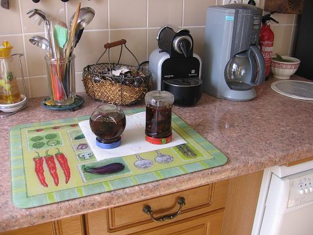

Recette n° 76 :
Confitures de figues du jardin de Mamy
à Quiberon

Ingrédients
: (pour 2 pots moyens)
- 500g de figues équeutées
- 500 g de sucre
- le jus d'un citron
- une cuiller à café d'extrait de vanille
- 2 pots à bouchon vissant
Préparation :
- faire un sirop avec eau, sucre, vanille et citron
- quand le sirop est au boulé, y mettre les figues et faire
cuire 5 mn
- retirer les figues et laisser cuire doucement le sirop seul 10 mn
- remettre les figues et laisser cuire à feu doux 30 mn
- pendant la cuisson, ébouillanter les pots et leurs couvercles
- en fin de cuisson, égoutter les pots, y mettre les figues
à l'écumoire puis compléter avec le sirop
- visser les couvercles à fond et retourner les pots, les
laisser refroidir avant de les retourner à l'endroit.
Observations :
- confitures faites à Rennes le 28 septembre 2006 avec
les premières figues (500g) récoltées à
Quiberon